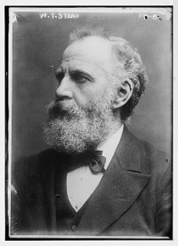
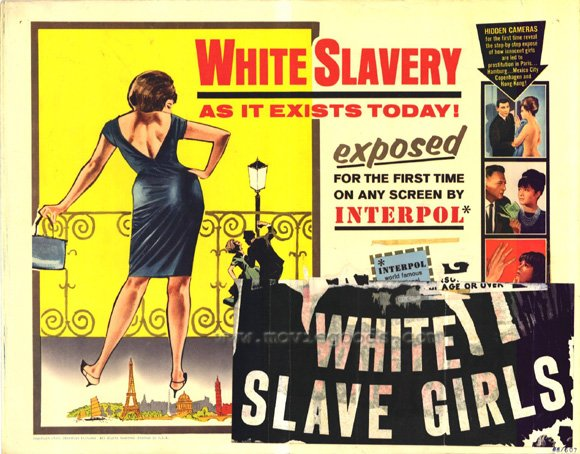
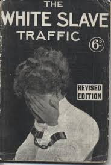

The transatlantic slave trade in Africans formally ended in 1888 with Brazil as the last country to make slavery illegal (Newman, 2013). Years earlier, in 1869, another type of slavery was incubated in Europe which came to be known as white slavery (Allain, 2017). The former type of slavery affected the conceptualization of the latter and hence the way human trafficking is defined in modern-day context.
The New Abolitionist Movement: Young Girls and Women
In 1860 slavery officially became illegal in British India (Newman, 2013). This was around the same time as the outset of white slavery in the United Kingdom which began as an attempt to repeal the various Contagious Disease Acts of 1860s (CD Act 1864, 1866, and 1869). The CD Acts were the manifestation of a State regulation system where brothels were licensed and prostitutes were regulated in various way such as medical examination and restriction on mobility (Doezema, 2000).
The police could detain any woman who was suspected of prostitution and force her to undergo a vaginal examination (Doezema, 2000). For women who were registered as prostitutes, which was a requirement under the CD Acts, these periodic examinations were mandatory (Fairobserver, 2013). If a woman was determined to be infected with a sexually transmitted disease, she could be contained until she was deemed to be "cured".
The English feminist Josephine Butler led a 16-year campaign to abolish the CD Act (Doezema, 2000). She argued that the forced vaginal examination was unconstitutional and that due to the exclusion of women from higher education, professional training, and paid employment, women lacked sexual autonomy and was forced to choose between marriage and prostitution.

William T. Stead's stories of white slavery and child prostitution in the Pall Mall Gazette helped pass the Criminal Law Amendment Act 1885
"However, the problem isn't the existence of semantically (used as a word's literal meaning) similar words, but rather that these words are conceptually different."
Josephine Butler came from a family involved in the abolition of the transatlantic slave trade in Africans and compared the situation of African slaves to those of English prostitutes. In 1875 she founded the International Abolitionist Federation (IAF) who aimed to abolish the state regulation of prostitution. Many of the members of IAF also came from families involved in the abolitionists movement of the transatlantic slave trade (Fairobserver, 2013) which explains the name "IAF" and the nexus between white slavery and the transatlantic slave trade.
The CLAA 1885: The First Human Trafficking Law
Despite IAF's international character the issues surrounding the regulation was still thought of as a domestic related issue. In 1873 the International Medical Congress advocated to dissolve the regulation of brothels and prostitution but this was considered to be a matter of domestic jurisdictions (Allain, 2017). This all changed in 1880 with Alfred Dyer's publication The European Slave Trade in English Girls which first gained momentum in Brussels and then proliferated throughout the European community.
The publication told the story of how young English girls who traveled to Belgium on fake documents in order to make them appear the legal age (Allain, 2017) and thus enabling them work in brothels, but were deceived and ended up working in conditions that were exploitative. Other similar publications, among those a scandalous reportage of child prostitution in London, created a hysteria in England based on the fear of mainly young innocent girls being sexually exploited (Lammasniemi, 2012).
As a reaction the House of Lords established a committee, in 1881, to investigate whether the Law Relating to the Protection of Young Girls was in need of amendment, especially focusing on the traffic of English women to foreign countries. Testimony given by public officials tended to align with the same narrative told by Dyer, about English girls willingly traveling to Belgium and France to work as prostitutes, only to end up being deceived and working in exploitative conditions (Lammasniemi, 2012).
In 1885 the Criminal Law Amendment Act of 1885 (CLAA 1885) was the first measure to be adopted. As demanded by the public, the age of consent got raised from 13 to 16 for girls. It also provided a legal definition of when a girl or a woman was a victim of white slave trade as Section 2(1) of the CLAA 1885 stated that it is:
Human Trafficking in 1885
ACT :
Procure
+
PURPOSE :
To have unlawful carnal connexion (prostitution)
=
Traffic in Persons

"a misdemeanour to procure or attempt to procure ‘any girl or woman under twenty-one years of age, not being a common prostitute, or of known immoral character, to have unlawful carnal connexion" (Lammasniemi, 2012).
This definition is significant in legally defining what constitutes as a trafficked girl or involuntary prostitute. It can be divided into two constituents: act and purpose. The act is "to procure or attempt to procure any girl […]" and the purpose is "to have unlawful carnal connexion (prostitution)".
In the CLAA 1885, it was only considered traffic if the woman or girl was under the age of 21 and not already a prostitute or deemed as being promiscuous or unrespectable. Despite the exclusion of all women and girls over the age of 21, an exception was included under section 3(3) that penalized anyone who:
"applies, administers to, or causes to be taken by any woman or girl any drug, matter, or thing, with intent to stupefy or overpower so as thereby to enable any person to have unlawful carnal connexion with such woman or girl" (Lammasniemi, 2012).
According to this definition an additional constituent to traffic was added: mean. The mean translated to "Applies, administers to, or causes to be taken by any woman or girl any drug, matter or thing". In other words, women who were being drugged for the purpose of commercial sexual exploitation was defined as victims of traffic regardless of age and their label as "common woman" or prostitute.
The hysteria created by The European Slave Trade in English Girls and similar publications is illustrative of the moral currents that shaped the context in which the first human trafficking law got formally institutionalized.

"The White Slaves of London" by W.N. Willis 1860-1922